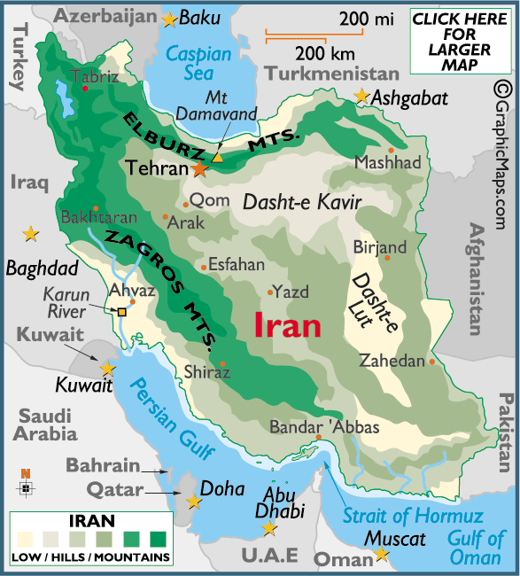

Photos
Click on the Photo Albums at the right to get a glimpse into the vastly diverse regions of Iran. I was able to snap some photos during my 6 months in Iran - some are personal, others are of the variety of landscapes, flavors and people I encountered. With limited access to visual equipment over the six month visit and filmmaking in Iran, all photos were taken with a Canon Elph SD500 digital camera.
